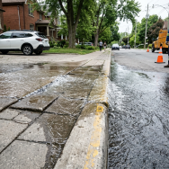
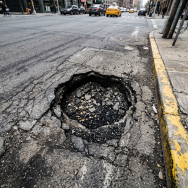
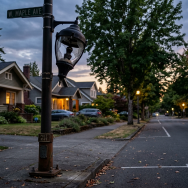
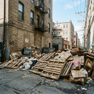
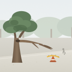

In review
CMP-2026-8841
·
Perumda PAM JAYA (Clean Drinking Water)
PAM clean drinking water pipeline burst flooding sidewalk in front of Cipete Raya MRT
148
2 proof
Oct 29
Track
Jl. Fatmawati Raya No. 42 (depan Stasiun MRT Cipete Raya)
·
Water & Sewage

Severe 15cm asphalt cavity in TransJakarta corridor causing motorbike rim damage
92
1 proof
Oct 28
Track
Jl. Gatot Subroto Kav. 38 (depan Menara Mulia, Jalur TransJakarta)
·
Roads & Transit

Complete PJU streetlight outage spanning 300 meters along residential corridor
64
1 proof
Oct 28
Track
Jl. Tebet Barat Dalam Raya No. 24, RT 08 / RW 03
·
Street Lighting

In review
CMP-2026-8720
·
Dinas Lingkungan Hidup DKI Jakarta (Waste & Rivers)
Illegal household trash accumulation obstructing drainage at Kali Krukut Kemang
78
1 proof
Oct 29
Track
Kampung Kemang, RT 02 / RW 01 (bantaran Kali Krukut)
·
Sanitation & Waste

Taman Suropati (sisi timur, dekat patung ASEAN)
·
Public Parks & Trees
Jl. Senopati No. 18, RT 06 / RW 02
·
Noise & Disturbance